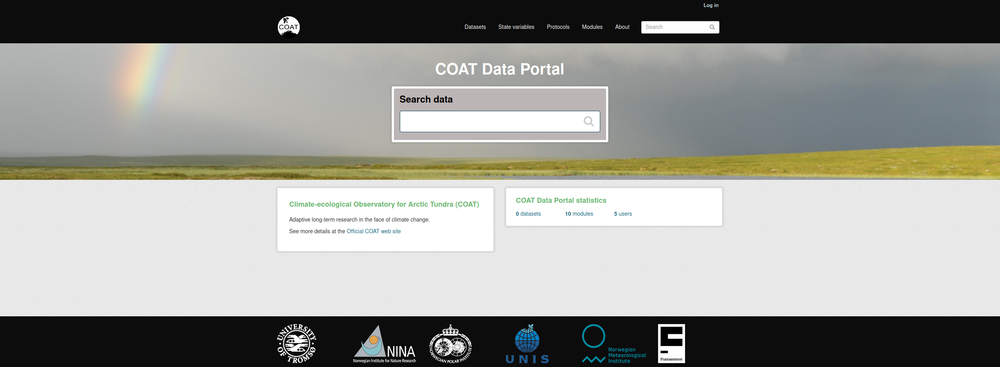
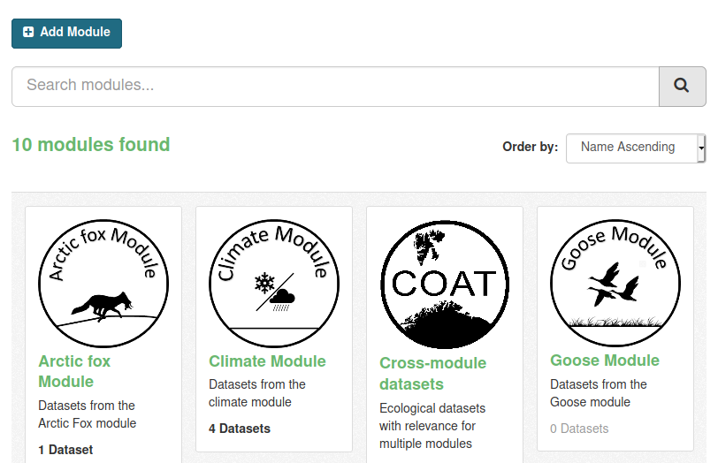

COAT Data Management¶
The COAT Data Portal is designed to share data collected and created following FAIR data principles in the frame of the COAT project. For more information about the COAT project and FAIR data principles refer to the about section
Datasets¶
Data in the portal is grouped in functional units called datasets.
In the context of the COAT data management,
a dataset:
is a collection of data represented by the same set of metadata
has a descriptive web page in the data portal
could contain one or many data files (e.g: one per year)
data files could be stored in different types and formats
is identified by a DOI
is provided a unique name and a permanent URL
once published, is considered permanently available
can have multiple versions
can include additional non-data files (readme, coordinates, auxiliary)
is formatted according to mandatory rules
For additional information about DOIs, see datacite documentation
Types of datasets¶
The COAT Data Portal provide a separate management for 3 types of datasets, each accessed from a different TAB of the portal:
Collected datasets (input for State Variables)
State Variables (Output of the project)
Data sampling protocols (describing the study design behind data collection)
Modules¶
Datasets are additionally grouped in Modules focused on the different monitoring targets of the COAT project activities.
The modules are separated data compartments, and users need to be module editors to be able to upload datasets to a specific module.
Modules are also a filtering category when searching for data.
Before uploading datasets¶
To be ready for data upload, dataset files need to be formatted according to mandatory formatting rules. Find more details in the data formatting section
Moreover, before uploading a dataset a user need to check that the corresponding protocol is already uploaded in the system. If not yet available, the first operation is to upload a protocol. See more details in the protocol uploading section
To help performing all the required steps before data upload, the quick check section helps to make sure that everything is compliant
Uploading datasets¶
When the data files are formatted and ready, the data upload process can start:
A user authorized to add data to a module can create a new dataset
the user edits the metadata using a form in the data portal interface
then can add all the data files, following a specific order.
data files can be added manually using the Graphic Interface, or by command line or scripting using the data API.
More details in the data upload section
During upload procedures the dataset will be still in private mode. Once the dataset is uploaded it can be published. Publishing means creating a DOI for the dataset, and this step means making the dataset permanent, with the obligation of being always available, findable and accessible. If any modification needed, it will be solved by creating a new version of the dataset.
datatasets can additionally be set in embargo mode, to keep private the most recent data files (up to 2 years). See details in the embargo description